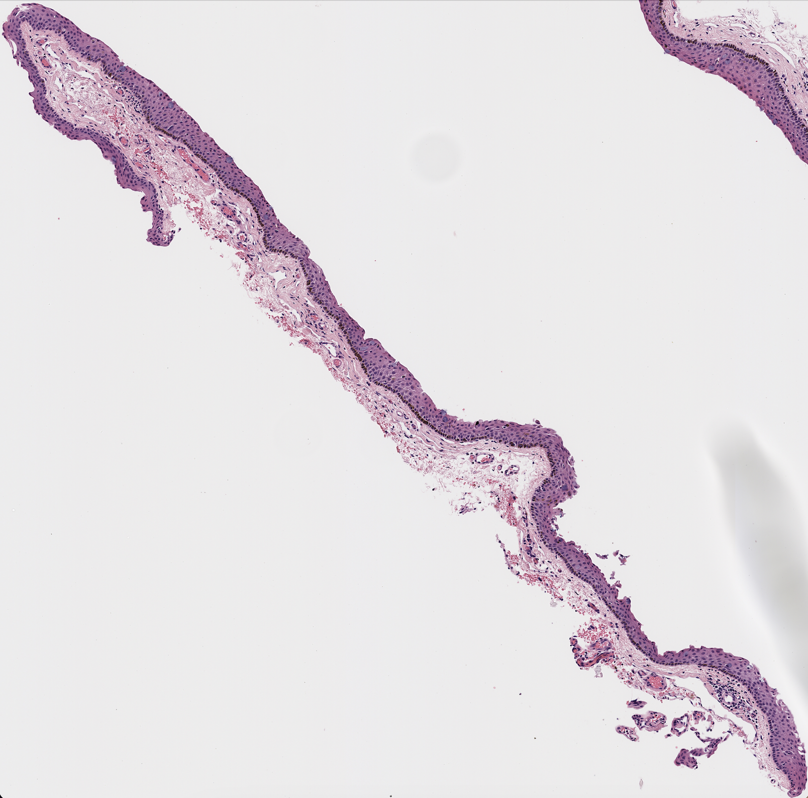
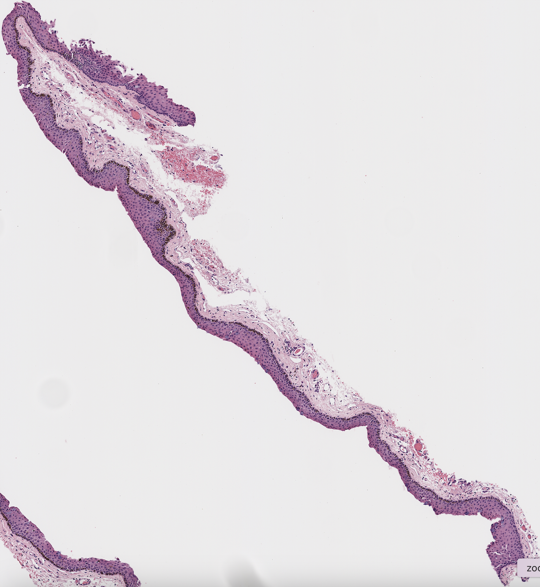
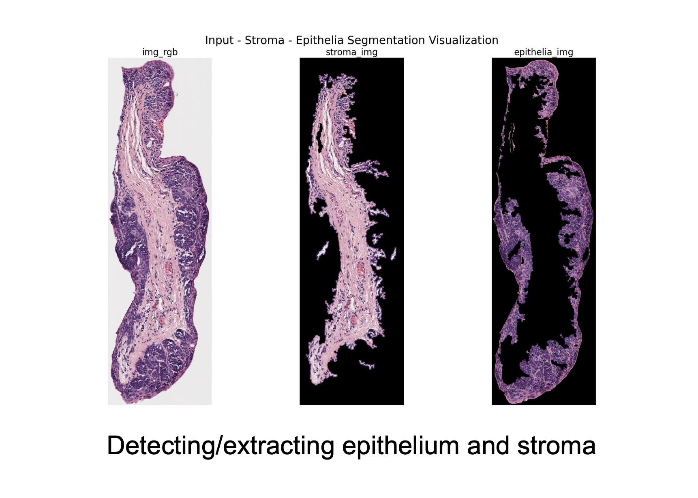
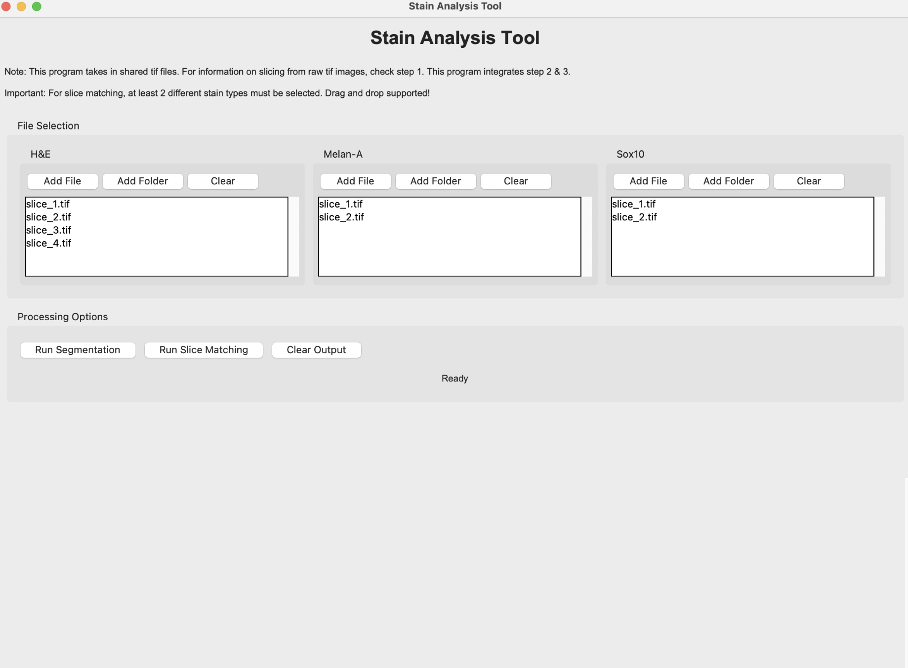
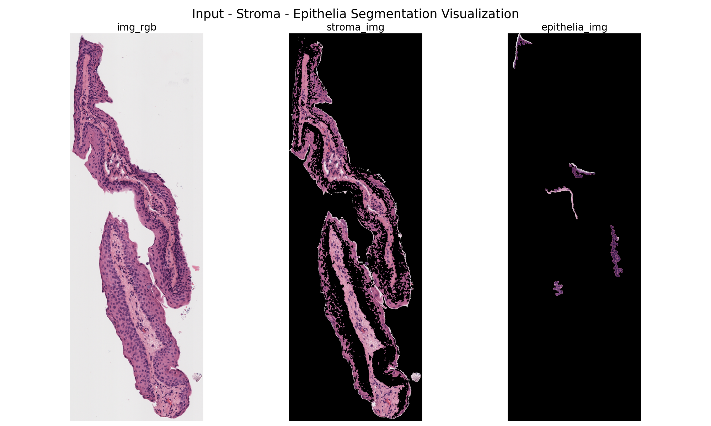
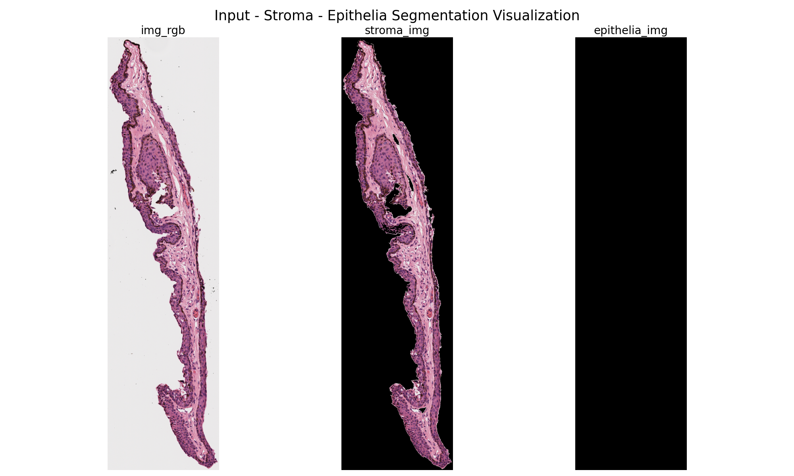

Automation
As noted in the Slice Extraction and Matching steps, we have been working manually. We do, however, hope to eventually make this whole process automated through a few key programs. These include slice extraction, tissue matching, and epithelium detection.
Slice Extraction
This step of the automation takes the whole slide image with multiple tissues slices on it and extracts the slices into their own file.
We have two methods for this step. Both work relatively well, but fail in specific cases.
Cara’s Method
As already detailed in Step 1, Cara’s code aims to expedite the slice extraction process by automatically exporting slices from a single slide image as individual annotations and saving them into a processed_data folder, using the following code: tissues_1.json, tissues_2.json, automate_export_newest.groovy, and existing_annotations.groovy.
Here is the documentation for Cara’s Method in case you are interested in using this algorithm now: Link
As previously stated above, however, we ultimately opted to extract our slices manually for better accuracy and efficiency. For future attempts, here are a few areas for improvement:
- Merging/Border Issues:
- Particularly when performed on slides with multiple slices, Cara’s code frequently either fails to merge (saves a single slice as two or more different slices) or incorrectly merges (saves two or more different slices as a single slice), requiring users to then manually adjust. On other occasions, the algorithm accurately identifies a region as a slice, yet includes too much unnecessary whitespace within the indicated annotation—again requiring manual adjustment. Potential solutions could include accounting more for the amount of whitespace in between neighboring slices and/or slice sizes (e.g. the difference in size/distance between the two respective slices in the slide images below).


- False/Failed Annotations:
- Another frequent issues was that the code would either incorrectly annotate a region of the slide (i.e. blank space or a shadow/blur) or would fail to annotate a clear slice. In our case, the latter issue appeared to commonly occur when dealing with slide images that only consisted of one large slice (e.g. many of the slides from Copenhagen), again requiring manual tracing and exporting instead. While manual extraction may ultimately be the more efficient option when only dealing with these large, single-slice images (as you would effectively be downloading and running code for just a single slice), it would again be helpful if the code could potentially be adjusted to better account for miscellaneous smudges/shadows on the slide.
- File Size is too Large:
- When the file sizes are too large, the program fails and the user must manually export the slices.
Kyla’s Method
Kyla’s method is similar to Cara’s method in goal and outcome, but differs in some approach and processing steps. Kyla’s methos uses pre-trained classifiers for each different stain type, so before it runs, it checks which stain type the slide image is based on the file name. It then splits larger annotations into smaller pieces and labels them all as tissue. It attempts to remove non-tissue images that have been pulled from the slides, then merges tissues that appear close together on the slide image.
Here is the documentation for Kyla’s Method in case you are interested in using this algorithm now: GitHub
For future attempts, here are a few areas for improvement:
- Geometry Operations
- The merging of annotations uses complex geometrical techniques such as ‘union’. This could lead to failure with overlapping or invalid shapes, and also create artifacts within the merged annotations.
- Tissue Merging Threshold
- The distance threshold for when two tissues should be merged into one slice is hard-coded into the algorithm. This means it is not perfectly generalizable. When running this code, a few people ran into issues where the program would either keep connected tissues separated or merge unconnected tissues. In the future, the threshold for merging two tissues could be based on the images themselves instead of being hard-coded in. Below is an example of two tissue slices that were originally merged by the automation because they appeared close together on the slide, but had to be manually separated.
 
Tissue Matching
Our current automated methodology for matching tissue images across all three stain types (H&E, Melanin, and Sox10) utilizes image preprocessing, contour extraction, and similarity scoring.
The current pipeline requires two main files, which can both be found here:
- AnniesMatching.ipynb: An interactive Jupyter Notebook for processing and visualizing tissue matches.
- match_pipeline.py: A Python script designed for batch processing of images.
Methodology
Annie’s code is designed to analyze tissue scan images for each patient and identify the best match across the three different staining types—H&E, melan (melanin), and Sox. The main objective is to find the optimal combination of one image from each stain type that has the highest overall similarity in shape. This similarity is computed by extracting the primary contours from each image and calculating shape similarity scores for each combination. The code then averages the similarity scores between the three image pairings to get an overall similarity score for each combination, which allows it to determine the best-matching trio of images for each patient.
Here is a more detailed step-by-step manual on how to run the code:
Prepare Image Data: Place
.tifimage files in the designated folder (e.g.processed_images). Ensure that each patient has images for all three stains (H&E, Melanin, Sox10).Choose Full or Subset Processing:
- For All Patients: Place all images in the same processed_images directory.
- For a Subset of Patients: Separate patient image files into their own folders within
processed_images(e.g.,processed_images/patient1,processed_images/patient2).
- Run the Pipeline:
- Run
match_pipeline.py. A GUI will prompt you to select the directory containing the images. - Open
AnniesMatching.ipynbin Jupyter Notebook and execute cells in sequence.
- Process and Review Matches:
- Upon execution, the pipeline will preprocess, extract contours, and match images, saving results in the matches folder. Images will be organized by patient, with matched slices grouped in subfolders.
Results and Known Issues
- Contour Matching with Holes in Tissue: The algorithm currently handles a single example with a hole in the tissue, as there were limited examples available. It averages the similarity between the three contours when a hole is present, relying on the similarity of the largest contour, not just edge similarity.
- Similarity Score Threshold: A fixed threshold has been set for similarity scores, which may work well for most cases but could be insufficient for specific cases with varying image quality or abnormal structures.
- Adaptive Thresholding by Stain Type: Custom adaptive thresholding is applied for each stain, tuned to reduce noise in Melan-a and Sox10 images. However, this adaptation is not entirely generalized and may need tuning for new or varied data sources.
- Pixel-Based Detection: The pipeline uses pixel values corresponding to stain-specific colors (e.g., purple for H&E). This color dependency may limit generalizability to other types of stains or differently colored tissue samples.
- Contour Selection Based on Size: The algorithm selects the two largest contours to account for tissue holes or irregular shapes. If there are multiple areas of interest, this method may not capture smaller but relevant contours, which could affect accuracy in more complex samples.
- Limited Testing for Hole Detection: The approach for detecting tissue holes has only been tested on a few examples, limiting our understanding of its robustness across diverse sample types.
Epithelium Detection


This algorithm aims to separate the epithelium from the stroma and create an epithelium mask automatically.
Methodology
This project involves a comprehensive image processing workflow designed to segment epithelial and stromal regions from tissue images stained with different markers. The methodology combines advanced image processing techniques, including color space transformations, morphological operations, and region-based segmentation, tailored for specific stain types and locations (e.g., Liverpool or Sheffield). For each image, the script Epithelium Extraction Script.ipynb first identifies background regions using the luminance channel. The algorithm then isolates epithelia and stroma using chroma channels, applying binning techniques to detect dominant pixel intensity ranges. Morphological operations such as dilation, erosion, and small object removal refine the segmentation. Gaussian smoothing is incorporated to reduce noise and improve mask quality. Segmented regions are applied as binary masks to the original image for visualization and saved for further analysis. Parameter tuning and function selection were performed iteratively based on intermediate visualizations, ensuring high accuracy for each stain-location combination.
Among the six algorithms implemented, those for H&E stains exhibit the highest accuracy, followed by Melan-A and Sox-10 stains. Each algorithm is adapted to the unique characteristics of the stain and location, ensuring reliable extraction of relevant regions.
The segmentation process for H&E stained images leverages the luminance and chroma characteristics of the image to differentiate background, stroma, and epithelial regions effectively. Using the YCrCb color space, the luminance channel identifies the background by isolating the bin with the highest pixel count, refined further through morphological operations like hole filling and object removal. For epithelial segmentation, the red chroma channel is used, with bins adjacent to the stroma bin analyzed to isolate epithelial regions. Morphological techniques, including dilation and Gaussian smoothing, enhance the segmentation mask. The process ensures robust separation of regions, saving the results as masks and visualizations for further analysis. This approach maintains adaptability to the variable staining intensities and patterns characteristic of H&E images.
The methodologies for segmenting and extracting epithelium and stroma regions from tissue images stained with Melan-A and Sox-10 employ similar algorithms but adapt to the unique properties of each stain. Both methods begin by loading the images and converting them to the YCrCb color space to leverage luminance (Y) and chroma (Cr or Cb) channels for segmentation. The background is identified using a binning approach on the luminance channel, isolating the most common intensity bin. Morphological operations like object removal and hole filling refine the background mask, ensuring accurate separation of non-background elements.
For Melan-A stains, the red chroma channel is used to identify stroma and epithelium, leveraging bins surrounding the most frequent intensity to segment stroma and bins further offset to isolate epithelium.
For Sox-10 stains, the blue chroma channel is used similarly, with a tailored binning strategy to reflect the different chromatic characteristics of this stain. In both cases, stroma and epithelium masks are refined through morphological dilation, Gaussian smoothing, and removal of small objects or holes. The resulting masks are applied to the RGB images to generate segmented outputs, which are saved alongside visualizations of the input, stroma, and epithelium regions. These methods balance robustness and flexibility, ensuring segmentation quality across diverse tissue samples and staining variations.
Follow this step-by-step manual to extract epithelia. Our API we created is included which automates the process.
Codes required:
Epithelium Extraction Script.ipynb
Set the input and output directories: Make sure the paths for the input and output directories are correctly configured to point to the appropriate folders on your computer.
Rename files to include locations: Update the file names to include their locations (E.G., h2114189 melan_ROI_1 (Sheffield).tif). This step is essential because the extraction algorithm selection depends on both the stain type and location.
Run the setup code: Execute all code cells from the purple header through the end of the file before executing the code cell below. Verify the folder object: Confirm that the folder object contains the correct tissue scans. Once verified, you may execute the code cell below.
Run
Epithelium Extraction Script.ipynb.
API
Here is the API we created to automate this step. Using this tool will speed up the process.

Results
As seen below, this program could pull out the epithelium on certain samples.
However, the program often failed, especially on more irregular shapes as seen below.
 
Conclusion
** The ultimate goal is to have this program work, so that all doctors have to do is push a button. However, with such inconsistent results, it is better to focus our efforts elsewhere, as we know doctors have the ability, in QuPath, to pull out slices and epithelium masks if need be. This is why we are focusing on patching with pre-processed data at this moment.**